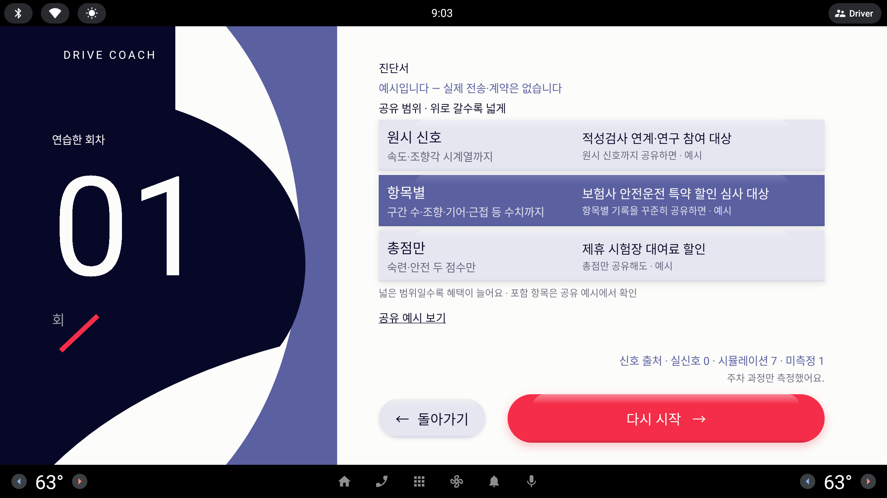
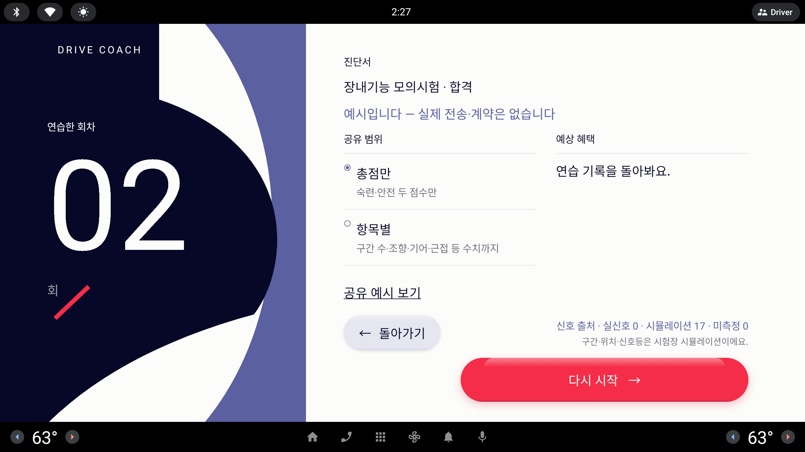

리포트 안 "진단서" 페이지의 오른쪽 면만 다시 짠다. 왼쪽 포스터(연습한 회차)는 그대로 두고, 공유 범위 셋·고지·공유 예시 진입·아래 알약 둘은 모든 시안이 유지한다.
사용자 피드백 (라운드 22)#진단서 — 디자인 컨셉을 해치지 않는 선에서 UX/UI 로 제안을 5개 정도 받고 싶어 / 예상 혜택 보다는 실제 혜택을 받을 수 있는 상황을 감안하여 텍스트를 변경해줘 / 공유 예시 또한 존재 의미와 필요 시 안에 세부 항목들을 제안 받고 싶어 / 돌아가기 / 다시 시작 알약이 너무 붙어 있어서 조치 필요 (다른 곳에도 통일성을 감안하여 검토 필요)
시안은 1/3 축소 — 오른쪽 면 560×423 px(왼쪽 포스터는 띠로만 표시). 실제 화면은 약 3배(2560×1268 dp). 진단서 화면은 숫자 허용.
알약 배치 규칙 (모든 시안 공통 · 과제 시트·시험장 시트와 같은 규칙)
`← 돌아가기`(보조 알약, Lavender, 112 dp)는 왼쪽 끝, 주 알약(Signal, 140 dp)은 오른쪽 끝에 두고 사이를 비운다 — 최소 64 dp(1/3 축소 약 21px). 주 알약 폭은 Setup `시작` 과 같은 약 570 dp(1/3 축소 190px)로 고정하고, 내용 폭을 다 채우지 않는다. 지금 진단서는 주 알약이 폭을 다 채워 돌아가기에 붙는다 — 폭을 줄이는 것만으로 간격이 생긴다. 같은 규칙을 과제 시트(돌아가기 · 시작), 시험장 시트(돌아가기 · 예약), 자세히 보기(돌아가기만, 왼쪽)에 그대로 적용한다.
지금 — 주차(lesson-certificate.png)

지금 — 모의시험(lesson-certificate-exam.png)

지금
두 열 나열
왼쪽 공유 범위 라디오 셋, 오른쪽 "예상 혜택" 줄 셋이 서로 관계없이 나란히 서 있다.
문제
어느 범위를 고르면 어느 혜택이 생기는지 연결이 없다 — 오른쪽은 선택과 무관하게 항상 같은 세 줄.
"예상 혜택"이라는 말이 막연하다. 운전자가 무엇을 하면 받을 수 있는지(조건)가 없다.
`다시 시작` 알약이 내용 폭을 다 채워 `돌아가기`와 거의 붙어 있다. 모의시험 버전은 혜택 칸이 한 줄뿐이라 오른쪽이 빈다.
`공유 예시 보기`가 토스트만 띄워 "무엇이 나가는지"를 보여 주지 못한다.
A · 정리
진단서
예시입니다 — 실제 전송·계약은 없습니다
공유 범위
총점만
숙련·안전 두 점수만 공유
항목별
구간 수·조향·기어·근접 등 항목별 수치까지
원시 신호
회차의 속도·조향각 시계열까지
이 범위로 받는 혜택 · 예시
제휴 시험장 대여료 할인총점만 공유해도
보험사 안전운전 특약 할인 심사 대상항목별 기록을 꾸준히 공유하면
적성검사 연계·연구 참여 대상원시 신호까지 공유하면
공유 예시 보기
← 돌아가기
다시 시작 →
시안 A
정리
지금 구조(왼쪽 범위 · 오른쪽 혜택)를 유지하고, 혜택 줄을 범위와 같은 높이에 맞춘 뒤 선택한 범위의 혜택만 Periwinkle 로 켠다. 알약은 규칙대로 양끝.
장점
화면 구조를 바꾸지 않아 Codex 변경이 가장 작다(줄 높이 맞춤 + 선택 색 + 알약 폭).
혜택 줄에 조건("꾸준히 공유하면")이 작은 글자로 붙어 "예상"이 "실제 조건"으로 바뀐다.
모의시험 버전은 제목 줄("장내기능 모의시험 · 합격")이 고지 위에 한 줄 더 들어가고 혜택은 "연습 기록을 돌아봐요." 한 줄 — 같은 틀 유지.
주의점
범위 ↔ 혜택이 "같은 높이"라는 암시뿐이라 C 보다 연결이 약하다.
구현 난이도 낮음. 정차 화면이라 가독성 문제 없음.
B · 단계
진단서
예시입니다 — 실제 전송·계약은 없습니다
공유 범위 · 위로 갈수록 넓게
원시 신호
속도·조향각 시계열까지
적성검사 연계·연구 참여 대상원시 신호까지 공유하면 · 예시
항목별
구간 수·조향·기어·근접 등 수치까지
보험사 안전운전 특약 할인 심사 대상항목별 기록을 꾸준히 공유하면 · 예시
총점만
숙련·안전 두 점수만
제휴 시험장 대여료 할인총점만 공유해도 · 예시
넓은 범위일수록 혜택이 늘어요포함 항목은 공유 예시에서 확인
공유 예시 보기
← 돌아가기
다시 시작 →
시안 B
단계
공유 범위를 세로 카드 세 장으로 쌓는다. 위로 갈수록 범위가 넓고, 선택한 카드는 Periwinkle 로 채운다. 카드 오른쪽에 그 범위의 혜택과 조건이 붙는다.
장점
"범위가 넓어질수록 혜택이 는다"는 구조가 카드 순서(위=넓음)로 보인다 — 설명이 필요 없다.
카드 한 장 = 범위 + 혜택 + 조건이라 선택과 결과가 한 덩어리로 읽힌다.
과제 카드·분류 알약과 같은 질감 카드라 포스터 컨셉에 잘 맞는다.
주의점
라디오가 사라지고 카드 자체가 선택 타깃이 된다 — 계측 테스트(라디오 태그)를 카드 태그로 바꿔야 한다.
"위로 갈수록 넓게"는 평소 목록 순서(총점만이 먼저)와 반대라 처음엔 낯설 수 있다. 구현 난이도 중간.
C · 짝
진단서
예시입니다 — 실제 전송·계약은 없습니다
무엇을 공유
그래서 무엇이 생기나 · 예시
총점만
숙련·안전 두 점수만
제휴 시험장 대여료 할인총점만 공유해도
항목별
구간 수·조향·기어·근접 등 수치까지
보험사 안전운전 특약 할인 심사 대상항목별 기록을 꾸준히 공유하면
원시 신호
속도·조향각 시계열까지
적성검사 연계·연구 참여 대상원시 신호까지 공유하면
공유 예시 보기
← 돌아가기
다시 시작 →
시안 C
짝
왼쪽 "무엇을 공유" 라디오와 오른쪽 "그래서 무엇이 생기나" 혜택을 화살표로 짝지어 같은 행에 둔다. 선택한 행만 Lavender 띠로 켠다.
장점
선택 → 결과의 인과가 한 줄에서 읽힌다. 피드백 "실제 혜택을 받을 수 있는 상황"에 가장 직접적인 답.
지금의 두 열 구조를 거의 그대로 쓰되 행 단위로 묶기만 하면 된다 — 자세히 보기 A(나란히)의 화살표 부품 재사용.
모의시험 버전은 오른쪽 열이 세 줄 모두 "연습 기록을 돌아봐요."가 되지 않게, 행 하나(총점만)만 두고 나머지 행은 혜택 칸을 비운다.
주의점
행 높이가 혜택 두 줄(혜택 + 조건)에 맞춰져 라디오 설명이 두 줄로 늘면 행이 커진다 — 설명은 한 줄로 유지.
구현 난이도 낮음(Row 셋 + 선택 배경).
D · 문서
진단서
예시입니다 — 실제 전송·계약은 없습니다
운전 연수 진단서
2026-10-05 · 발급 예시
후면 직각 주차 · 2회
한 번에 들어갔어요✓
방향은 맞게 섰어요✓
마무리가 깔끔했어요✓
안전했어요✓
항목별 공유
공유 범위
총점만
숙련·안전 두 점수만
항목별
구간 수·조향·기어·근접 등 수치까지
원시 신호
속도·조향각 시계열까지
꾸준히 공유하면 → 보험 특약 할인 심사 대상 · 예시
공유 예시 보기
← 돌아가기
다시 시작 →
시안 D
문서
왼쪽에 "진단서" 한 장(제목·날짜·과제·판정 네 줄·공유 범위 스탬프)을 종이 카드로 그리고, 오른쪽에 범위 선택과 혜택 한 줄을 둔다. 범위를 바꾸면 스탬프 글자가 바뀐다.
장점
"진단서"라는 이름이 비로소 화면과 맞는다 — 무엇이 발급되는지 사물로 보인다.
판정 네 줄(Done 2×2 와 같은 문장)이 다시 보여 리포트와 진단서가 한 이야기로 이어진다.
스탬프 하나로 선택 상태가 문서 위에 남아 "지금 무엇을 공유하기로 했는지"가 분명하다.
주의점
정보가 가장 많다 — 오른쪽 범위 설명을 한 줄로 줄여야 들어간다. 모의시험 버전은 판정 네 줄 대신 "코스 100점 · 합격" 한 줄.
문서 카드가 공유 예시 시트와 역할이 겹친다. 둘을 두면 공유 예시 시트는 "포함 항목 체크리스트"에 집중시킨다.
구현 난이도 중간(카드 레이아웃 + 회전 스탬프).
E · 트랙
진단서
예시입니다 — 실제 전송·계약은 없습니다
공유 범위
총점만항목별원시 신호
구간 수·조향·기어·근접 등 항목별 수치까지 공유해요. 위치·대화·음성은 나가지 않아요.
이 범위로 받는 혜택 · 예시
보험사 안전운전 특약 할인 심사 대상
항목별 기록을 꾸준히 공유하면
총점만 → 제휴 시험장 대여료 할인원시 신호 → 적성검사 연계·연구 참여
공유 예시 보기
← 돌아가기
다시 시작 →
시안 E
트랙
범위 선택을 세그먼트 알약 트랙(라운드 21 ② 분류 알약 트랙과 같은 부품) 한 줄로 두고, 아래에 선택한 범위의 혜택 카드 한 장. 다른 범위의 혜택은 칩으로 작게.
장점
화면에 글자가 가장 적다 — 한 번에 범위 하나, 혜택 하나. 운전석에서 읽기 가장 편하다.
이미 있는 부품(알약 트랙 + 질감 카드)만 쓰므로 언어가 일관되고 구현이 가볍다.
혜택 카드가 커서 "조건"(꾸준히 공유하면)이 눈에 들어온다.
주의점
세 범위의 설명을 한 번에 비교할 수 없다 — 트랙을 눌러 봐야 한다. 그래서 설명 한 줄을 트랙 바로 아래 둔다.
분류 알약 트랙은 "종류"를 고르는 부품인데 여기서는 "범위(넓이)"를 고른다 — 같은 모양이 다른 뜻으로 쓰인다는 점을 감수해야 한다.
구현 난이도 낮음(기존 트랙 재사용).
혜택 문구 — 예상 → 실제
"예상 혜택"을 "이 범위로 받는 혜택"으로 바꾸고, 줄마다 운전자가 실제로 할 수 있는 조건을 앞에 둔다. 운전자가 읽는 문장이라 숫자(주·회·%)를 넣지 않는다 — "꾸준히", "두 점수만"처럼 쓴다. 모든 줄 끝 또는 눈썹에 "예시"를 남겨 실제 계약이 없음을 유지한다.
지금
짧은 (화면용, 두 줄)
설명형 (공유 예시 시트·발표 자료용)
보험료 할인 — 운전습관연계보험(UBI) 안전운전점수 연계 예시
보험사 안전운전 특약 할인 심사 대상 항목별 기록을 꾸준히 공유하면
항목별 기록을 보험사에 꾸준히 공유하면, 운전습관 연계 보험(UBI)의 안전운전 특약 할인 심사를 신청할 수 있어요. 할인 여부와 폭은 보험사가 정해요. (예시)
적성검사 일부 면제 — 운전 숙련 인증 연계 예시
적성검사 연계·연구 참여 대상 원시 신호까지 공유하면
속도·조향각 시계열까지 기관에 공유하면, 운전 적성검사 연계 프로그램과 안전 운전 연구 참여 대상이 돼요. 면제가 아니라 "연계 신청 자격"이에요. (예시)
제휴 시험장 대여료 할인
제휴 시험장 대여료 할인 총점만 공유해도
숙련·안전 두 점수만 제휴 시험장에 보여 주면, 다음 예약 때 대여료 할인을 받을 수 있어요. 가장 적게 공유하고도 받는 혜택이에요. (예시)
공유 범위
푸는 혜택
범위 설명 (지금 → 제안)
총점만
제휴 시험장 대여료 할인
숙련·안전 두 점수만 공유 → 숙련·안전 두 점수만 (그대로)
항목별
보험사 안전운전 특약 할인 심사
구간 수·조향·기어·근접 등 항목별 수치까지 → 구간 수·조향·기어·근접 등 수치까지 (한 줄로 줄임)
원시 신호
적성검사 연계 · 연구 참여
회차의 속도·조향각 시계열까지 → 속도·조향각 시계열까지
모의시험 (코스)
연습 기록을 돌아봐요.
코스 진단서는 혜택 대신 지금 문장을 유지하고, 범위 설명을 "코스 점수만 / 구간별 감점까지 / 속도·조향각 시계열까지"로 바꾼다.
공유 예시 보기 — 존재 의미와 세부 항목
`공유 예시 보기`는 운전자가 "내 기록 중 무엇이 밖으로 나가는지"를 눈으로 확인하는 동의 화면이다. 범위 이름("항목별")만으로는 어떤 숫자가 포함되고 무엇이 빠지는지 알 수 없어, 보내기 전에 실제 모양을 보여 주는 것이 공유의 전제다. 그래서 이 시트는 범위를 바꾸면 포함 항목 체크가 따라 바뀌고, 제외 항목(위치·대화·음성)을 명시하며, "예시 — 실제 전송 없음" 워터마크로 해커톤 범위를 정직하게 둔다. 지금의 토스트("예시 화면입니다")를 이 시트로 바꾸면 진단서 페이지의 "예시" 고지가 말이 아니라 화면으로 증명된다.
공유 예시 시트 · 항목별 선택 시(1/3 축소)
공유 예시 · 항목별
예시 — 실제 전송 없음
발급
대상본인동승자기관기간2026-09-28 – 10-05과제후면 직각 주차 · 2회유효발급일부터 석 달제외위치 · 대화 · 음성 없음
포함 항목
총점만
숙련 100 · 안전 100
항목별
구간 수 2 · 조향 왕복 1 · 기어 전환 0
근접 0 · 급정지 0 · 방향 편차 2°
원시 신호 · 범위 밖
속도·조향각 시계열
예시 — 실제 전송 없음
← 돌아가기
세부 항목
시트 구성 (위에서 아래)
발급 대상 — 본인 / 동승자 / 기관 칩. 대상에 따라 유효기간 기본값만 다르고 포함 항목은 범위가 정한다.
기간 · 과제 — 리포트의 회차 범위와 과제 이름을 그대로 가져온다(새 데이터 없음).
포함 항목 체크리스트 — 총점만 = 숙련·안전 두 숫자 / 항목별 = + 구간 수·조향 왕복·기어 전환·근접·급정지·방향 편차 / 원시 신호 = + 속도·조향각 시계열 그래프 썸네일. 선택 범위 밖 묶음은 흐리게 두고 "범위 밖"을 적어 무엇이 더 나갈 수 있는지도 보인다.
제외 항목 — 위치·대화·음성 없음. 이 한 줄이 동승자·기관 공유에서 가장 먼저 묻는 질문에 답한다.
유효기간 — "발급일부터 석 달"처럼 말로 쓴다(진단서는 숫자 허용이지만 기간은 말이 더 읽기 쉽다).
워터마크 — "예시 — 실제 전송 없음"을 대각선으로 크게. 캡처가 외부로 돌아도 실제 발급물로 오해되지 않는다.
버튼 — `← 돌아가기` 하나만 왼쪽. 전송 버튼은 두지 않는다(없는 기능을 그리지 않는다).
주의점
미측정 항목은 체크리스트에서 "미측정"으로 쓴다 — 공유물에도 신호 출처 정직성을 유지.
구현: 진단서 하위 페이지 하나(LessonPhase 에 선택 범위 전달), 데이터는 리포트 값 재사용. 난이도 낮음~중간.
추천
C · 짝
범위를 고르면 같은 행에서 혜택과 조건이 바로 읽혀 "실제 혜택을 받을 수 있는 상황"이 화면 구조 자체로 설명되고, 지금 두 열을 행 단위로 묶기만 하면 되어 변경이 작다.
알약은 공통 규칙(돌아가기 왼쪽 끝 · 주 알약 오른쪽 끝 190px · 사이 64 dp 이상)으로 과제 시트·시험장 시트와 함께 맞추고, `공유 예시 보기`는 위 시트로 바꾼다. 글자를 더 줄이고 싶으면 E(트랙)가 차선.